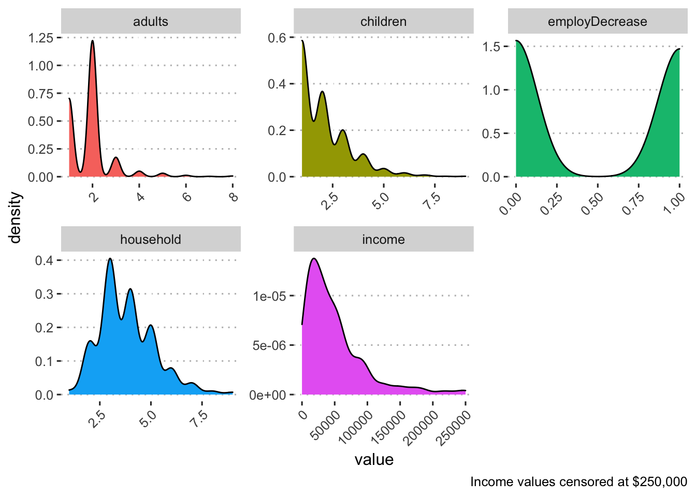

These analyses are based on responses collected from 8867 caregivers between the dates of April 06, 2020 and December 03, 2020. These caregivers represent a range of voices: 8.70% are Black/African American, 16.61% are LatinX, (0.00% report being both Black/African American and LatinX,) and 41.49% live at or below 1.5 times the federal poverty line. Proportions/percentages are calculated based on the item-level response rates, not out of the total sample size. The data for these analyses are not weighted.
More specifically, there were 774 Black caregivers who participated between the dates of April 06, 2020 and December 01, 2020.
Demographics by income for Black respondents:
| variable | n | mean | sd | range |
|---|---|---|---|---|
| adults | 767 | 1.91 | 0.92 | 1.00 - 8.00 |
| children | 774 | 2.02 | 1.26 | 1.00 - 9.00 |
| employDecrease | 493 | 0.49 | 0.50 | 0.00 - 1.00 |
| household | 767 | 3.83 | 1.37 | 1.00 - 9.00 |
| income | 293 | 62,292.33 | 150,043.91 | 0.00 - 2,109,120.00 |

| variable | n | mean | sd | range |
|---|---|---|---|---|
| above Poverty | ||||
| adults | 242 | 1.93 | 0.65 | 1.00 - 5.00 |
| children | 243 | 1.70 | 0.91 | 1.00 - 6.00 |
| employDecrease | 151 | 0.32 | 0.47 | 0.00 - 1.00 |
| household | 242 | 3.57 | 1.07 | 1.00 - 7.00 |
| income | 106 | 95,387.69 | 131,399.01 | 60.00 - 1,300,000.00 |
| 200xFPL | ||||
| adults | 406 | 1.86 | 0.95 | 1.00 - 7.00 |
| children | 410 | 2.12 | 1.32 | 1.00 - 8.00 |
| employDecrease | 242 | 0.57 | 0.50 | 0.00 - 1.00 |
| household | 406 | 3.91 | 1.43 | 1.00 - 9.00 |
| income | 184 | 43,278.03 | 157,904.31 | 0.00 - 2,109,120.00 |